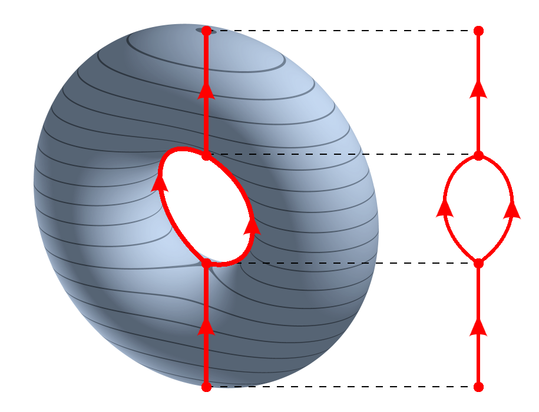
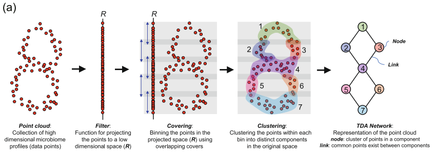
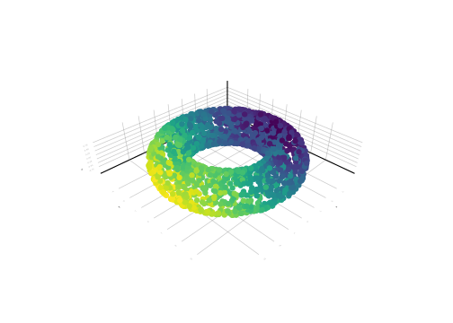
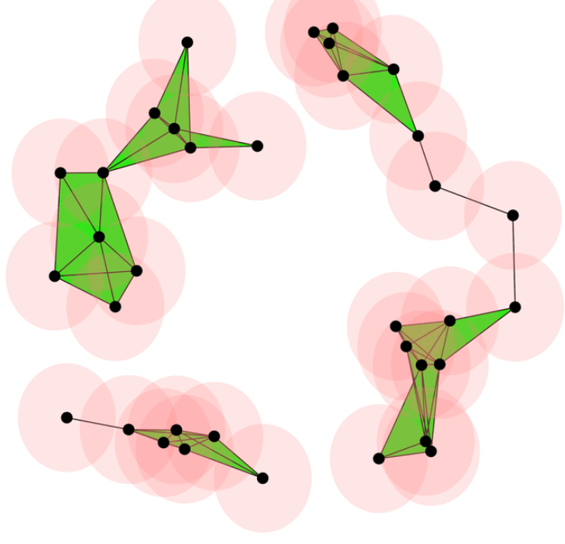
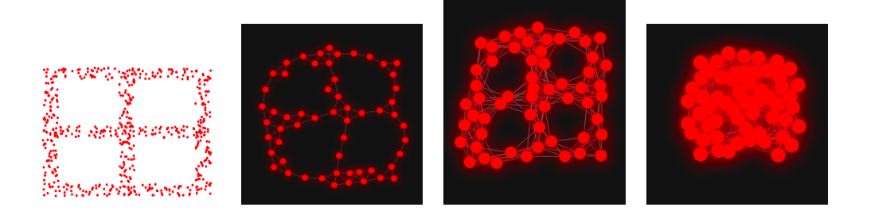
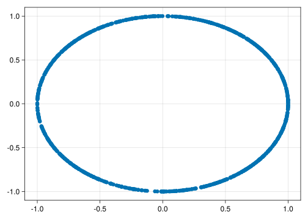
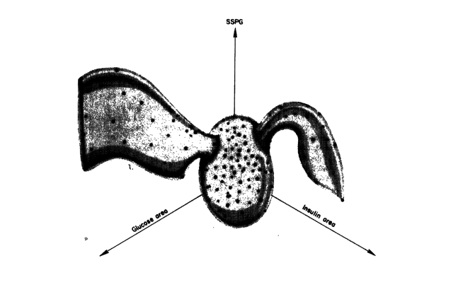
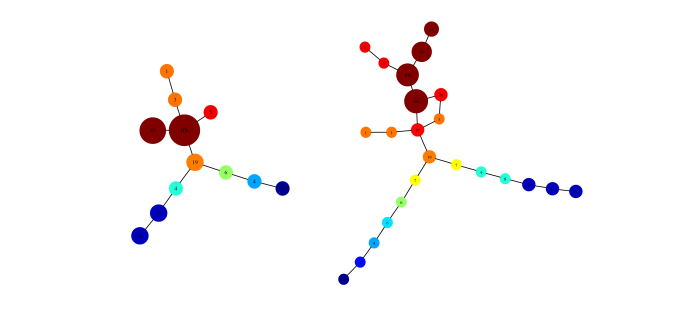
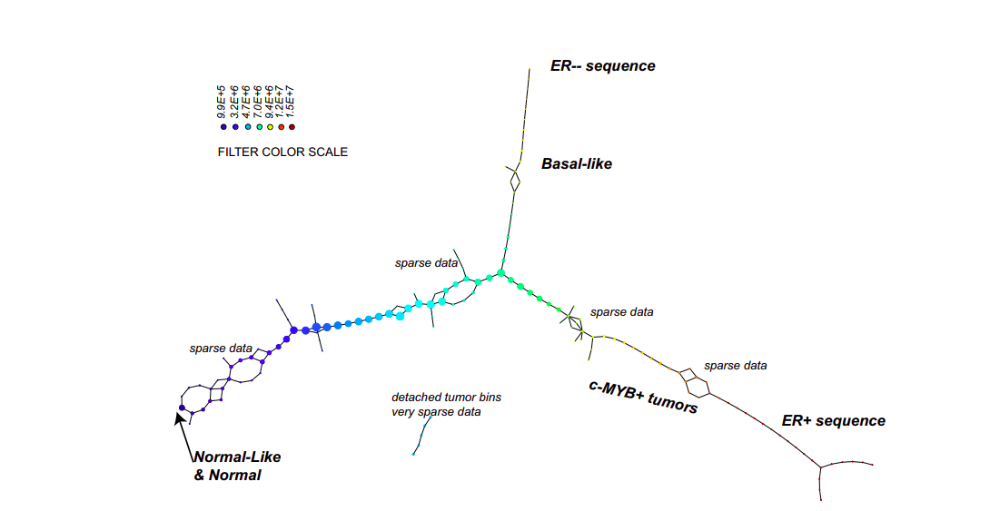
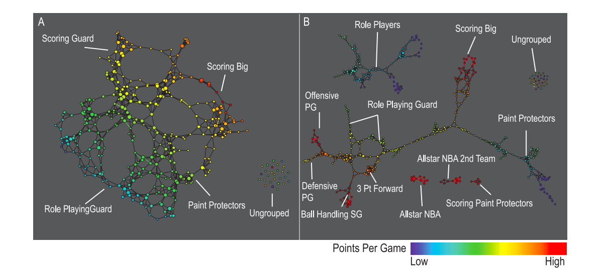

using TDAmapper;
using MetricSpaces;6 The Mapper algorithm and friends
6.1 Reeb graph
In topology, there are many ways by which we try to see what can’t be seen, in particular high-dimensional sets. The Reeb graph is one of those ways: given a topological space \(X\) and a map \(f: X \to \mathbb{R}\), we can collapse the connected components of its pre-images to get a graph that reflects the level-sets of \(f\).
More formally, we define a relation \(\sim\) on \(X\) such that \(p \sim q\) if-and-only-if \(p\) and \(q\) belong to the same connected component of \(f^{-1}(c)\) for some \(c \in \mathbb{R}\).

6.2 The (classical) mapper
The (classical) mapper is an algorithm to create graphs from metric spaces, and can be seen as an “statistical” version of the Reeb graph.
To be able to mimick the Reeb graph, we need to change some objects from the continuous setting to the discrete setting:
- \(X = (X, d)\) is now a finite metric space, also called a point cloud;
- \(f: X \to \mathbb{R}\) can be any function (since \(X\) is discrete, \(f\) is always continuous);
- instead of inverse images of points of \(\mathbb{R}\), we calculate inverse images of subsets of \(\mathbb{R}\) (usually intervals);
- instead of connected components (which are trivial in the discrete setting), we use some clustering algorithm (DBSCAN, single linkage, etc.) and consider these clusterings as “connected pieces of \(X\)”.

The mapper graph can shed light to the geometry of \(X\):
- nodes are clusters of points of \(X\);
- the color of the nodes can summarise some information about the points of \(X\) that represent this node;
- edges denote some proximity (in the metric of \(d\) of \(X\)) between the nodes.
To be more precise, to calculate the mapper of a metric space \(X\), we need the following ingredients:
- a function \(f: X \to \mathbb{R}\) that measures something interesting in \(X\), as, for example, the excentricity, the first coordinate of PCA, and so on;
- a covering \(C\) of the image \(f(X) \subset \mathbb{R}\);
- a method \(l\) to cluster each \(f^{-1}(c)\) for \(c \in C\).
When all of this is chosen, we have a covering of \(X\) by clustering each pre-image of the elements of \(C\), that is:
\[ V = \{ l(p); \; p = f^{-1}(c) \; \text{for} \; c \in C\} \]
We then calculate the 1-dimensional nerve of \(V\): we define the set of edges \(E \subset V \times V\) by
\[ (v_1, v_2) \in E \leftrightarrow v_1 \cap v_2 \neq \emptyset \]
In words, we have an edge between \(v_1\) and \(v_2\) if there is some point in both \(v_1\) and \(v_2\) at the same time.
6.2.1 Example
Let’s import some packages:
and define \(X\) as a torus with the usual Euclidean distance
X = torus(2000);We define the function \(f: X \to \mathbb{R}\) as the projection on the \(x\)-axis because our torus is laying down compared to the one in the Reeb graph example.
Let fv be a vector such that fv[i] is the \(x\)-axis projection of the point \(x_i\) of \(X\):
fv = X .|> first;You can plot \(X\) colored by \(f\) as follows:
using CairoMakie;
scatter(X, color = fv)
Important: the plots will be interactive when running in Julia if you change CairoMakie to GLMakie. Give it a try!
Define the covering intervals cv as follows:
C = uniform(fv, overlap = 150);You can check the first five intervals of this covering:
C[1:5]5-element Vector{Interval}:
Interval(-4.709972f0, -3.7120821f0)
Interval(-4.139749f0, -3.1418595f0)
Interval(-3.5695267f0, -2.571637f0)
Interval(-2.999304f0, -2.0014143f0)
Interval(-2.4290814f0, -1.4311918f0)For the clustering algorithm we choose the DBSCAN with radius 1:
clustering = cluster_dbscan(radius = 1);Then the mapper graph of \(X\) can be calculated by
# the mapper function needs:
# X
# fv, the values of f(X)
# the covering C
# the clustering function
mp = mapper(as_matrix(X), fv, C; clustering = clustering)And plotted with
# define the value of each node as the maximum of
# values of fv
node_values = node_colors(mp, fv)
mapper_plot(mp, node_values = node_values)Compare it with the Reeb graph from the start.
6.3 Ball mapper
Another way to reduce the complexity of a metric space is to approximate it by a simplicial complex. Simplicial complexes are like small building blocks glued together, each of these blocks a small representative of an \(n\)-dimensional space: points, line segments, triangles, tetrahedrons, and so on.
The Vietoris-Rips complex is build as follows: given a metric space \((X, d)\) and an \(\epsilon > 0\), define the following simplicial complex:
\[ VR(X, \epsilon) = \{ [ x_1, \ldots, x_n ] \; d(x_i, x_j) < \epsilon, \forall i, j \} \]
that is: the points of \(X\) are our vertices, and we have an \(n\)-simplex \([x_1, \ldots, x_n]\) whenever the pairwise distance between \(x_1, \ldots, x_n\) is less than \(\epsilon\). This condition is equivalent to ask that
\[ \cap_i B(x_i, \epsilon) \neq \emptyset \]
where \(B(x, \epsilon)\) is the ball of center \(x\) and radius \(\epsilon\).

The ball mapper is clearly inspired by the Vietoris-Rips complex. Given a metric space \((X, d)\) with \(X = \{x_1, \ldots, x_n\}\), select a subset of indexes \(L \subseteq \{1, \ldots, n\}\) and define the ball mapper graph G as follows: the set of vertices of \(G\) is \(L\), and set of edges \(E\) given by
\[ (i, j) \in E \Leftrightarrow B(x_i, \epsilon) \cap B(x_j, \epsilon) \neq \emptyset \]
The ball mapper then can be seen as the 1-skeleton of the Vietoris-Rips, but create using balls whose center can only be the elements indexed by \(L\).

To exemplify, consider a circle
X = sphere(1000, dim = 2);Check that it is indeed a circle:
scatter(X)
Now take \(L\) as a hundred random points and let’s create the ball mapper of \(X\) with radius \(\epsilon = 0.1\):
L = rand(1:1000, 100)
mp = ball_mapper(as_matrix(X), L, ϵ = 0.5);mapper_plot(mp)and now for the torus
X = torus(1000)
L = rand(1:1000, 100)
mp = ball_mapper(as_matrix(X), L, ϵ = 1);
mapper_plot(mp)6.4 What can we do with mapper-like algorithms?
Mapper and ballmapper are mostly used in exploratory data analysis, in the sense that the resulting graph can be explored to understand relations in the original dataset.




https://commons.wikimedia.org/wiki/File:3D-Leveltorus-Reebgraph.png↩︎